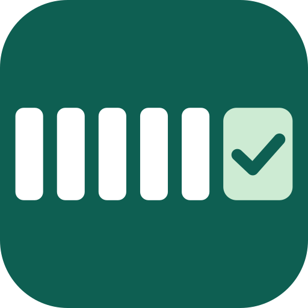
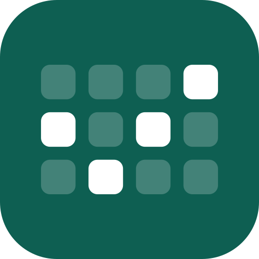

Escala Certa · proposta de marca
Duas direções. A palavra é a mesma (Bricolage Grotesque ExtraBold, "Certa" na cor de destaque); muda o símbolo.
Opção A · Semana 5+2
Cinco barras são os dias de trabalho; o bloco verde com o "certo" são as duas folgas, no lugar. É o 5x2 desenhado: quem vê entende o produto.

ícone 128
64
32
16 (favicon)
Escala Certaperfil no WhatsApp / Instagram
 Descubra quantas pessoas você precisa com a nova escala 5x2
Descubra quantas pessoas você precisa com a nova escala 5x2Uma grade de escala (dias × semanas) em que as folgas marcadas desenham um "certo". Mais icônica e abstrata; funciona muito bem como ícone de app.

ícone 128
64
32
16 (favicon)
Escala Certaperfil no WhatsApp / Instagram
Descubra quantas pessoas você precisa com a nova escala 5x2